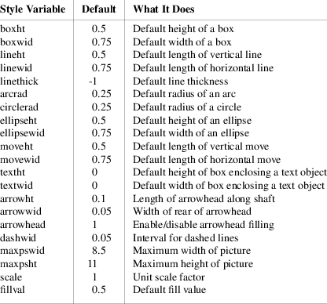

This is an annotated grammar of pic.
In general, pic is a free-format, token-oriented language that ignores whitespace outside strings. But certain lines and constructs are specially interpreted at the lexical level:
A comment begins with # and continues to \n (comments may also follow text in a line). A line beginning with a period or backslash may be interpreted as text to be passed through to the post-processor, depending on command-line options. An end-of-line backslash is interpreted as a request to continue the line; the backslash and following newline are ignored.
Here are the grammar terminals:
|
INT |
A positive integer. |
NUMBER
|
A floating point numeric constant. May contain a decimal point or be expressed in scientific notation in the style of printf(3)’s %e escape. A trailing ‘i’ or ‘I’ (indicating the unit ‘inch’) is ignored. | |||
|
TEXT |
A string enclosed in double quotes. A double quote within TEXT must be preceded by a backslash. Instead of TEXT you can use |
sprintf ( TEXT [, <expr> ...] )
except after the ‘until’ and ‘last’ keywords, and after all ordinal keywords (‘th’ and friends).
|
VARIABLE |
A string starting with a character from the set [a-z], optionally followed by one or more characters of the set [a-zA-Z0-9_]. (Values of variables are preserved across pictures.)
|
LABEL |
A string starting with a character from the set [A-Z], optionally followed by one or more characters of the set [a-zA-Z0-9_]. |
COMMAND-LINE
|
A line starting with a command character (‘.’ in groff mode, ‘\’ in TeX mode). |
BALANCED-TEXT
|
A string either enclosed by ‘{’ and ‘}’ or with X and X, where X doesn’t occur in the string. |
BALANCED-BODY
|
Delimiters as in BALANCED-TEXT ; the body is interpreted as ‘⟨command⟩...’. |
FILENAME
|
The name of a file. This has the same semantics as TEXT . |
MACRONAME
|
Either VARIABLE or LABEL . |
Tokens not enclosed in ⟨⟩ are literals, except:
|
1. |
\n is a newline. | |
|
2. |
Three dots is a suffix meaning ‘replace with 0 or more repetitions of the preceding element(s). | |
|
3. |
An enclosure in square brackets has its usual meaning of ‘this clause is optional’. | |
|
4. |
Square-bracket-enclosed portions within tokens are optional. Thus, ‘h[eigh]t’ matches either ‘height’ or ‘ht’. |
If one of these special tokens has to be referred to literally, it is surrounded with single quotes.
The top-level pic object is a picture.
<picture>
::=
.PS [NUMBER [NUMBER]]\n
<statement> ...
.PE \n
The arguments, if present, represent the width and height of the picture, causing pic to attempt to scale it to the given dimensions in inches. In no case, however, the X and Y dimensions of the picture exceed the values of the style variables maxpswid and maxpsheight (which default to the normal 8.5i by 11i page size).
If the ending ‘.PE’ is replaced by ‘.PF’ or ‘.PY’, the page vertical position is restored to its value at the time ‘.PS’ was encountered. Another alternate form of invocation is ‘.PS < FILENAME ’, which replaces the ‘.PS’ line with a file to be interpreted by pic (but this feature is deprecated).
The ‘.PS’, ‘.PE’, ‘.PF’, and ‘.PY’ macros to perform centering and scaling are normally supplied by the post-processor.
In the following, either ‘|’ or a new line starts an alternative.
<statement>
::=
<command> ;
<command> \n
<command> ::=
<primitive> [<attribute>]
LABEL : [;] <command>
LABEL : [;] <command> [<position>]
{ <command> ... }
VARIABLE [:] = <any-expr>
figname = MACRONAME
up | down | left | right
COMMAND-LINE
command <print-arg> ...
print <print-arg> ...
sh BALANCED-TEXT
copy FILENAME
copy [FILENAME] thru MACRONAME [until TEXT]
copy [FILENAME] thru BALANCED-BODY [until TEXT]
for VARIABLE = <expr> to <expr> [by [*]
<expr>] do BALANCED-BODY
if <any-expr> then BALANCED-BODY [else BALANCED-BODY]
reset [VARIABLE [[,] VARIABLE ...]]
<print-arg> ::=
TEXT
<expr>
<position>
The current position and
direction are saved on entry to a
‘{ ... }’ construction and restored on
exit from it.
Note that in ‘if’ constructions, newlines can only occur in BALANCED-BODY . This means that
if
{ ... }
else
{ ... }
fails. You have to use the braces on the same line as the keywords:
if {
...
} else {
...
}
This restriction doesn’t hold for the body after the ‘do’ in a ‘for’ construction.
At the beginning of each picture, ‘figname’ is reset to the vbox name ‘graph’; this command has only a meaning in TeX mode. While the grammar rules allow digits and the underscore in the value of ‘figname’, TeX normally accepts uppercase and lowercase letters only as box names (you have to use ‘\csname’ if you really need to circumvent this limitation).
<any-expr>
::=
<expr>
<text-expr>
<any-expr> <logical-op> <any-expr>
! <any-expr>
<logical-op> ::=
== | != | && | ’||’
<text-expr> ::=
TEXT == TEXT
TEXT != TEXT
Logical operators are handled specially by pic since they can deal with text strings also. pic uses strcmp(3) to test for equality of strings; an empty string is considered as ‘false’ for ‘&&’ and ‘||’.
<primitive>
::=
box # closed object — rectangle
circle # closed object — circle
ellipse # closed object — ellipse
polygon # closed object — polygon
arc # open object — quarter-circle
line # open object — line
arrow # open object — line with arrowhead
spline # open object — spline curve
move
TEXT TEXT ... # text within invisible box
plot <expr> TEXT # formatted text
’[’ <command> ... ’]’
Drawn objects within ‘[ ... ]’ are treated as a single composite object with a rectangular shape (that of the bounding box of all the elements). Variable and label assignments within a block are local to the block. Current direction of motion is restored to the value at start of block upon exit. Position is not restored (unlike ‘{ }’); instead, the current position becomes the exit position for the current direction on the block’s bounding box.
<attribute>
::=
h[eigh]t <expr> # set height of closed figure
wid[th] <expr> # set width of closed figure
rad[ius] <expr> # set radius of circle/arc
diam[eter] <expr> # set diameter of circle/arc
up [<expr>] # move up
down [<expr>] # move down
left [<expr>] # move left
right [<expr>] # move right
from <position> # set from position of open figure
to <position> # set to position of open figure
at <position> # set center of open figure
with <path> # fix corner/named point at specified
location
with <position> # fix position of object at specified
location
by <expr-pair> # set object’s attachment point
then # sequential segment composition
dotted [<expr>] # set dotted line style
dashed [<expr>] # set dashed line style
thick[ness] <expr> # set thickness of lines
chop [<expr>] # chop end(s) of segment
’->’ | ’<-’ |
’<->’ # decorate with arrows
invis[ible] # make primitive invisible
solid # set solid line style
fill[ed] [<expr>] # fill closed figure with optional
density
xscaled <expr> # slant box into x direction
yscaled <expr> # slant box into y direction
colo[u]r[ed] TEXT # set fill and outline color for figure
outline[d] TEXT # set outline color for figure
shaded TEXT # set fill color for figure
same # copy size of previous object
cw | ccw # set orientation of curves
ljust | rjust # adjust text horizontally
above | below # adjust text vertically
aligned # align parallel to object
TEXT TEXT ... # text within object
<expr> # motion in the current direction
Missing attributes are supplied from defaults; inappropriate ones are silently ignored. For lines, splines, and arcs, height and width refer to arrowhead size.
The ‘at’ primitive sets the center of the current object. The ‘with’ attribute fixes the specified feature of the given object to a specified location. (Note that ‘with’ is incorrectly described in the Kernighan paper.)
The ‘by’ primitive is not documented in the tutorial portion of the Kernighan paper, and should probably be considered unreliable.
The primitive ‘arrow’ is a synonym for ‘line ->’.
Text is normally an attribute of some object, in which case successive strings are vertically stacked and centered on the object’s center by default. Standalone text is treated as though placed in an invisible box.
A text item consists of a string or sprintf-expression, optionally followed by positioning information. Text (or strings specified with ‘sprintf’) may contain font changes, size changes, and local motions, provided those changes are undone before the end of the current item. Text may also contain \-escapes denoting special characters. The base font and specific set of escapes supported is implementation dependent, but supported escapes always include the following:
|
\fR, \f1 |
Set Roman style (the default) | |
|
\fI, \f2 |
Set Italic style | |
|
\fB, \f3 |
Set Bold style | |
|
\fP |
Revert to previous style; only works one level deep, does not stack. |
Color names are dependent on the pic implementation, but in all modern versions color names recognized by the X window system are supported.
A position is an (x,y) coordinate pair. There are lots of different ways to specify positions:
<position>
::=
<position-not-place>
<place>
( <position> )
<position-not-place> ::=
<expr-pair>
<position> + <expr-pair>
<position> - <expr-pair>
( <position> , <position> )
<expr> [of the way] between <position> and
<position>
<expr> ’<’ <position> ,
<position> ’>’
<expr-pair> ::=
<expr> , <expr>
( expr-pair )
<place> ::=
<label>
<label> <corner>
<label> <reference-point>
<corner> [of] <label>
<reference-point> of <label>
Here
<label> ::=
LABEL [. LABEL ...]
<nth-primitive>
<corner> ::=
.n | .e | .w | .s
.ne | .se | .nw | .sw
.c[enter] | .start | .end
.t[op] | .b[ot[tom]] | .l[eft] | .r[ight]
left | right | <top-of> | <bottom-of>
<north-of> | <south-of> | <east-of> |
<west-of>
<center-of> | <start-of> | <end-of>
upper left | lower left | upper right | lower right
<reference-point> ::=
.v[er[tex]] <expr>
.v[er[tex]] ` <expr> '
.mid[point] <expr>
.mid[point] ` <expr> '
<xxx-of> ::=
xxx # followed by ‘of’
<nth-primitive> ::=
<ordinal> <object-type>
[<ordinal>] last <object-type>
<ordinal> ::=
INT th
INT st | INT nd | INT rd
` <any-expr> 'th
<object-type> ::=
box
circle
ellipse
polygon
arc
line
arrow
spline
’[]’
TEXT
As Kernighan notes, “since barbarisms like 1th and 3th are barbaric, synonyms like 1st and 3rd are accepted as well.” Objects of a given type are numbered from 1 upward in order of declaration; the last modifier counts backward.
The “'th” form (which allows you to select a previous object with an expression, as opposed to a numeric literal) is not documented in DWB’s pic(1).
The ⟨xxx-of⟩ rule is special: The lexical parser checks whether xxx is followed by the token ‘of’ without eliminating it so that the grammar parser can still see ‘of’. Valid examples of specifying a place with corner and label are thus
A .n
.n of A
.n A
north of A
while
north A
A north
both cause a syntax error. (DWB pic also allows the weird form ‘A north of’.)
Here the special rules for the ‘with’ keyword using a path:
<path>
::=
<relative-path>
( <relative-path> , <relative-path> )
<relative-path> ::=
<corner>
. LABEL [. LABEL ...] [<corner>]
The following style variables control output:

Any of these can be set by assignment, or reset using the reset statement. Style variables assigned within ‘[ ]’ blocks are restored to their beginning-of-block value on exit; top-level assignments persist across pictures. Dimensions are divided by scale on output.
All pic expressions are evaluated in floating point; units are always inches (a trailing ‘i’ or ‘I’ is ignored). Expressions have the following simple grammar, with semantics very similar to C expressions:
<
e
x
p
r
>
:
:
=
V
A
R
I
A
B
L
E
N
U
M
B
E
R
<
p
l
a
c
e
>
<
p
l
a
c
e
-
a
t
t
r
i
b
u
t
e
>
<
e
x
p
r
>
<
o
p
>
<
e
x
p
r
>
-
<
e
x
p
r
>
(
<
a
n
y
-
e
x
p
r
>
)
!
<
e
x
p
r
>
<
f
u
n
c
1
>
(
<
a
n
y
-
e
x
p
r
>
)
<
f
u
n
c
2
>
(
<
a
n
y
-
e
x
p
r
>
,
<
a
n
y
-
e
x
p
r
>
)
r
a
n
d
(
)
<place-attribute>
.x | .y | .h[eigh]t | .wid[th] | .rad
<op> ::=
+ | - | * | / | % | ˆ | ’<’ |
’>’ | ’<=’ |
’>=’
<func1> ::=
sin | cos | log | exp | sqrt | int | rand | srand
<func2> ::=
atan2 | max | min
Both exp and log are base 10; int does integer truncation; and rand() returns a random number in [0-1).
There are define and undef statements which are not part of the grammar (they behave as pre-processor macros to the language). These may be used to define pseudo-functions.
define name { replacement-text }
This defines name as a macro to be replaced by the replacement text (not including the braces). The macro may be called as
name(arg1, arg2, ..., argn)
The arguments (if any) are substituted for tokens $1, $2 ... $n appearing in the replacement text. To undefine a macro, say undef name, specifying the name to be undefined.